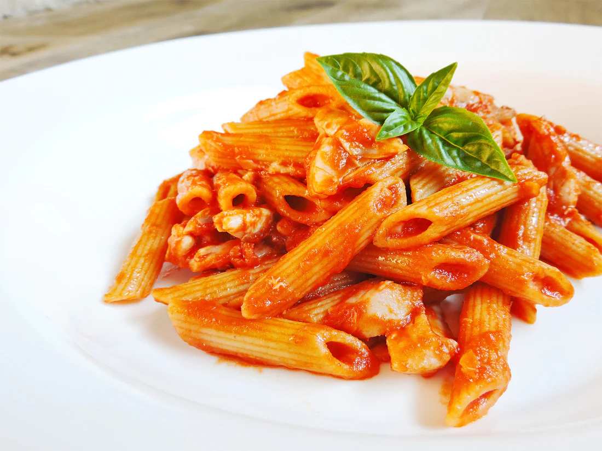

Penne al pomodoro
Ingredienti
Di seguito riportiamo gli ingredienti per preparare il nostro piatto:
- 400g di penne rigate
- 350g di passata di pomodoro
- 1 spicchio di aglio
- parmigiano q.b.
- olio extravergine d'oliva
- basilico q.b.
- sale q.b.
Preparazione:
- Metti l'aglio in una larga padella
- Aggiungi l'olio 2 e fai imbiondire l'aglio
- Versa la passata di pomodoro 3, condisci con un pizzico di sale e fai cuocere per 15-20 minuti rigirando ogni tanto.
- A metà cottura della salsa, cuoci la pasta in acqua bollente e salata
- Scola le penne al dente
- Distribuisci la pasta nei piatti individuali, decora con il basilico e servi ben calda
Conservazione
Si consiglia di preparare le penne al sugo di pomodoro e gustarle calde al momento. Puoi realizzare in anticipo il condimento e conservarlo in frigorifero per alcune ore.